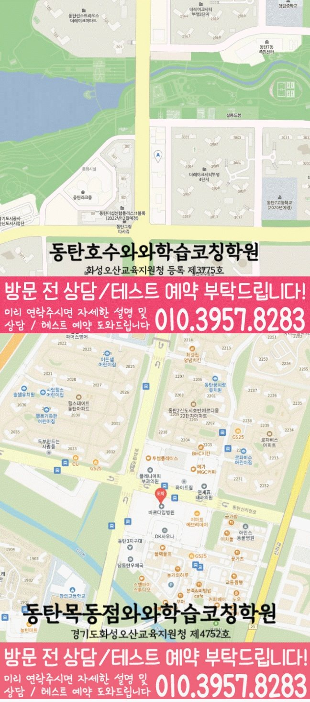

30초 핵심 안내
송동 수학학원 선택 전 확인할 기준
송동에서 수학학원을 비교할 때에는 과목 수보다 학교 학습과 문장제 조건 해석과 식 세우기가 한 주 계획으로 이어지는지 확인해야 합니다. 제공 주소는 경기 화성시 동탄순환대로 127-19 에스비타운 907호이고, 제공된 학교 참고 정보는 방교초·서연초·청림중·서연중·방교중·정현고·서연고·창의고이며 학생별 우선순위는 실제 학습 자료를 근거로 정합니다.
Math Learning Guide
송동 수학학원 선택 전 초·중·고 학생의 학교 진도, 수학 상태, 개념 이해와 문제 적용의 연결, 통학과 상담 기준을 확인하세요.
30초 핵심 안내
송동에서 수학학원을 비교할 때에는 과목 수보다 학교 학습과 문장제 조건 해석과 식 세우기가 한 주 계획으로 이어지는지 확인해야 합니다. 제공 주소는 경기 화성시 동탄순환대로 127-19 에스비타운 907호이고, 제공된 학교 참고 정보는 방교초·서연초·청림중·서연중·방교중·정현고·서연고·창의고이며 학생별 우선순위는 실제 학습 자료를 근거로 정합니다.
수업 안내 이미지

센터 위치 안내

경기 화성시 송동에서 수학학원을 찾는다면 처음 문의 과정에서 가장 필요한 답은 막연한 평가가 아니라 자녀의 오류 유형을 어떤 순서로 살펴볼지에 관한 설명입니다. ‘입시맞춤상담’에 관해서는 성적을 약속하는 표현으로 보지 않고, 시작점과 확인 자료가 다음 복습으로 어떻게 이어지는지 물어봅니다. 송동 안내 주소는 ‘경기 화성시 동탄순환대로 127-19 에스비타운 907호’입니다. 또한, 송동에서 방문을 준비할 때 방문 가능 여부를 판단할 때는 지도상의 표기보다 실제 경로와 출입 조건을 직접 알아보세요. 질문 목록을 정리하며, 송동에서 참고 문구에 영어와 수학이 있더라도 실제 운영 여부는 과목별로 묻고, 수학 학습 고민과 다른 과목의 질문을 섞지 않는 방식이 실용적입니다. 설명을 위해 ‘과제를 정리할 때, 어느 이전 개념을 가져와야 하는지 정하지 못해 풀이를 미루는 학생’이라는 가상 고민 유형을 정했습니다. 아래 내용은 복합 문제에 필요한 이전 개념을 연결하는 데 겪는 어려움을 중심으로 진단, 학습 순서, 지역 정보, 상담 항목을 차례로 연결합니다.
송동 수학학원을 알아보는 단계에서는 주소와 학년 정보를 먼저 맞춰야 상담 내용이 구체적이 됩니다. 제공 자료의 센터 위치는 경기 화성시 동탄순환대로 127-19 에스비타운 907호입니다. 수학 가능 학년은 초1·초2·초3·초4·초5·초6·중1·중2·중3·고1·고2·고3입니다.
송동 제공 자료에는 방교초·서연초·청림중·서연중·방교중·정현고·서연고·창의고가 학교 참고 목록으로 정리되어 있습니다. 해당 학교 학생이라면 최근 시험지나 주간 과제를 가져와 수학 학습에서 먼저 조정할 부분을 구체적으로 확인하는 것이 좋습니다.
송동 상담에서는 와와학습코칭센터 동탄호수점, 화성오산교육지원청 등록 제3775호를 센터 확인 자료로 사용합니다. 등록 여부만으로 수업 적합성을 단정하지 않고 학생 기록과 실제 상담 조건을 함께 비교해야 합니다.
첫 질문은 복합 문제에 필요한 이전 개념을 연결하는 데 겪는 어려움을 짧은 행동으로 바꾸는 데서 시작할 수 있습니다. 최근 풀이에서 현재 문제에 필요한 이전 개념을 고르는 장면을 찾고 학생이 멈춘 순간을 한 문장으로 적습니다. 문의 항목을 나눌 때, 그다음 송동 상담 자리에서 같은 장면을 어떤 자료로 확인하며 이후 학습 범위를 어떻게 정하는지 물어봅니다. 우선, 이 순서라면 막연한 평가와 실제 확인 절차를 구분하기 쉽습니다.
바로 결정하지 않는다면 단원 간 개념 연결 관련 답변, 입시맞춤상담 확인 결과, 비용·일정처럼 남은 질문을 서로 다른 묶음으로 정리하세요. 복습 범위를 정할 때, 자녀에게 필요한 이유가 분명하지 않은 항목은 우선순위를 낮출 수 있습니다. 그 과정에서, 확인된 사실과 기대를 한 문장에 섞지 않는 것이 중요한 판단 기준입니다. 후속 질문을 남길 때, 다음 상담 자리에서는 아직 답이 없는 항목과 재점검 시점부터 물어봅니다.
학습 순서를 정할 때는 현재 문제에 필요한 이전 개념을 고르는 장면을 살피고 바로 필요한 개념만 좁혀 안내합니다. 송동에서 ‘입시맞춤상담’ 관련 사실과 확인 전 정보를 나눌 때, 다음에는 안내가 있는 예제와 혼자 푸는 문제를 나누어 적용 여부를 비교합니다. 잘못 푼 문항은 이유와 다시 볼 날짜를 남긴 뒤 단원 조합이 달라진 문제에서도 필요한 이전 개념을 골라 연결하는지 재점검합니다. 송동 상담 자리에서는 이 흐름 가운데 어느 과정부터 시작하는지 물어보세요.
또한, 관리 방식을 비교할 때는 과제→오류 표시→재풀이→다음 범위의 연결을 먼저 살펴봅니다. 답변을 비교하기 전에, 송동 상담에서는 각 과정의 담당과 점검 시점, 학생 또는 보호자가 볼 수 있는 기록의 유무를 직접 물어야 합니다. 단원 간 개념 연결에 관한 피드백이 있다면 학습자가 다시 확인할 행동까지 구체적인지 봅니다. 질문 목록을 정리하며, 문의 과정에서 듣지 않은 관리 절차는 사실로 적지 않습니다.
‘입시맞춤상담’이라는 표현을 결과 약속으로 받아들이기보다 현재 상태를 무엇으로 살피는지부터 물어야 합니다. ‘과제를 정리할 때, 어느 이전 개념을 가져와야 하는지 정하지 못해 풀이를 미루는 학생’ 고민에 관한 학습 질문과 구분해, 점검 내용이 다음 학습 계획과 어떤 순서로 연결되는지, 학부모가 볼 수 있는 설명은 무엇인지도 질문할 수 있습니다. ‘입시맞춤상담’이라는 표현을 검토할 때 구체적인 성적 변화나 합격 가능성은 주어진 정보로 판단하지 않고 상담에서 확인한 절차만 선택 근거로 사용합니다.
안내 범위를 지키기 위해, 송동 정보를 정리할 때 지역·학교·주소를 하나의 근거처럼 묶어 해석하지 않는 편이 좋습니다. 송동에서 ‘입시맞춤상담’ 관련 사실과 확인 전 정보를 나눌 때, 이 페이지가 다루는 지역은 ‘경기 화성시 송동’이고, 주소는 찾아갈 위치를 확인하기 위한 표기입니다. 안내된 ‘방교초’는 송동 문의 내용을 정리하기 위한 학교 표기일 뿐 제휴, 재원 여부, 실제 수강 사실을 입증하지 않습니다. 송동에서 ‘입시맞춤상담’ 관련 사실과 확인 전 정보를 나눌 때, 송동 안내에 주변 주거 형태나 상권, 통학 거리는 제공되지 않았으므로 덧붙이지 않습니다.
또한, 첫 문의가 끝나면 바로 결정하기보다 남은 질문의 순서를 정합니다. 단원 간 개념 연결 관련 답은 점검 자료와 완료 기준을 다시 보고, 입시맞춤상담 관련 답은 대상과 조건을 대조합니다. 아울러, 비용·일정처럼 받지 못한 정보는 후속 문의로 넘깁니다. 덧붙여, 다음 확인 날짜에는 문의 과정에서 기록한 내용만 사용하세요.
Information Basis
센터명·주소·등록번호·학교 참고 목록은 제공 자료 범위에서 확인했습니다. 실제 수업 가능 학년과 과목, 시간표는 상담 시점에 다시 확인해야 합니다.
FAQ
복습 범위를 정할 때, 피드백이 제공된다고 전제하지 말고 먼저 유무를 확인하세요. 제공된다면 누구에게 어떤 내용이 언제 전달되는지와 학생이 받은 뒤 다시 살펴볼 행동을 나누어 물어보는 방법이 더 분명합니다.
‘입시맞춤상담’은 성적이나 결과를 입증하는 자료가 아니므로 점검 과정에 관한 질문으로 바꾸어야 합니다. ‘입시맞춤상담’을 알아볼 때 결과를 약속하는 말로 받아들이지 말고 현재 상태를 어떤 자료로 점검하는지, 틀린 유형과 다음 학습 범위를 어떻게 연결하는지 확인하세요.
운영 여부를 단정하지 않으려면, 보조 문구만을 근거로 두 과목의 개설 여부를 확정할 수는 없습니다. 각 과목의 현재 운영 여부와 대상 학년을 따로 살펴보고, 수학에서는 현재 문제에 필요한 이전 단원 개념을 찾아 연결하는 과정을 어떤 방식으로 살피는지 추가 질문으로 남기세요.
정답 표시만 보지 말고 풀이 이유를 학생의 말로 설명하게 한 뒤 단원 조합이 달라진 문제에서도 필요한 이전 개념을 골라 연결하는지 살펴보세요. 질문 목록을 정리하며, 답을 고친 흔적과 설명이 멈춘 위치를 함께 준비하면 상담에서 이해와 우연한 선택을 구분할 기준을 물을 수 있습니다.
Parent Perspective
※ 송동 학부모가 상담에서 확인할 상황을 재구성한 예시이며, 실제 수강 후기나 특정 성적 결과가 아닙니다.
다음 내용은 학습 고민을 설명하기 위한 가상 예시입니다. 실제 사례가 아닌 설명용 유형으로 ‘과제를 정리할 때, 어느 이전 개념을 가져와야 하는지 정하지 못해 풀이를 미루는 학생’을 설정합니다. 송동 설명을 들을 때 이 가상 유형을 설명하기 위해 보호자는 한 문제에 쓰인 현재 단원과 이전 단원을 표시하고, 학생이 어느 개념부터 떠올렸는지 적은 풀이를 준비합니다. 그 과정에서, 송동 상담용 메모에는 과제를 시작하고 마무리한 시각과 도움을 요청한 지점도 함께 적습니다. 과제를 정리할 때에 학생이 ‘어느 이전 개념을 가져와야 하는지 정하지 못해 풀이를 미루는’ 모습을 보인다는 가정 아래, 상담에서는 복합 문제에 필요한 이전 개념을 찾는 방법과 여러 조건을 연결할 순서를 물어봅니다. 우선, 송동 상담에서는 추가로 과제 정리 과정에서 스스로 한 일과 안내가 필요했던 일을 어떻게 구분하는지도 확인합니다. ‘입시맞춤상담’에 관해서는 현재 상태를 어떤 자료로 살피고 오류 유형을 다음 학습 계획에 어떻게 반영하는지도 함께 묻습니다. 입시맞춤상담은 성적 변화를 입증하는 정보가 아니므로 점검 자료와 복습 절차에 관한 답만 기록합니다. 입시맞춤상담 확인 질문까지 포함한 가상의 준비 과정일 뿐 실제 수업 운영이나 개선 결과를 보여 주는 사례가 아닙니다.